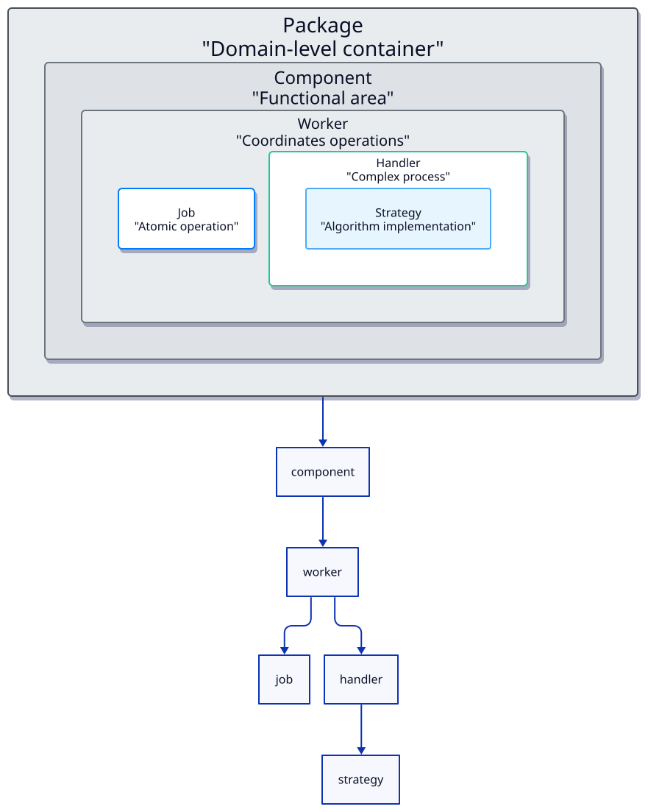

Derafu Backbone Architecture
Derafu Backbone provides a structured framework for building modular and maintainable PHP libraries. It follows a hierarchical organization that separates concerns into distinct components, making your code more organized, testable, and extensible.
- Package
- Component
- Worker
- Job
- Handler
- Strategy
- Benefits of This Architecture
- Design Pattern Comparisons

Package
Definition: A high-level container representing a complete domain or subdomain within your application.
Responsibility: Groups functionally related components that work together to provide domain-specific capabilities.
Characteristics:
- Represents a complete business domain (e.g., Billing, Accounting, Human Resources).
- Contains multiple components.
- Provides domain-wide configuration and services.
- Acts as the primary entry point for domain functionality.
Examples: BillingPackage, AccountingPackage, HumanResourcesPackage
Component
Definition: A functional area or module within a domain package.
Responsibility: Groups workers that handle specific aspects of the domain.
Characteristics:
- Represents a distinct functional area within a domain.
- Contains multiple workers focused on related tasks.
- Provides component-specific configuration.
- Manages cross-cutting concerns within its functional area.
Examples: DocumentComponent, ExchangeComponent, TradingPartiesComponent
Worker
Definition: Coordinator of business operations related to a specific aspect of functionality.
Responsibility: Exposes public methods that can be called by clients and coordinates Jobs, Handlers, and Strategies to perform work.
Characteristics:
- Acts as a facade for the underlying implementation.
- Exposes domain operations through public methods.
- Coordinates the execution of jobs and handlers.
- May implement simple operations directly.
- Delegates complex processing to handlers.
Examples: BuilderWorker, RendererWorker
Job
Definition: An atomic, self-contained unit of work that performs a single operation.
Responsibility: Executes a specific task with clear inputs and outputs.
Characteristics:
- Focused on doing one thing well.
- Encapsulates a single operation.
- Has clear, well-defined inputs and outputs.
- Does not orchestrate other jobs.
- Reusable across different contexts.
- Stateless and idempotent when possible.
Examples: NormalizeBoletaAfectaJob, NormalizeFacturaAfectaJob
Handler
Definition: Orchestrator of complex processes involving multiple operations.
Responsibility: Coordinates multiple jobs or strategies to complete complex workflows.
Characteristics:
- Orchestrates multiple operations in sequence.
- Manages workflow and process state.
- Selects appropriate strategies based on context.
- Handles errors and transactional boundaries.
- Implements business process logic.
- Can use multiple jobs and strategies.
Examples: EmailSenderHandler, SiiSenderHandler
Strategy
Definition: Specific implementation of an algorithm or approach to solving a problem.
Responsibility: Provides variant implementations for specific operations that can be interchanged.
Characteristics:
- Implements a specific algorithm or approach.
- Allows for swappable implementations.
- Used by handlers to provide different behaviors.
- Focuses on “how” something is done.
- Follows the Strategy design pattern.
- Encapsulates specific implementation details.
Examples: JsonParserStrategy, XmlParserStrategy, YamlParserStrategy
Benefits of This Architecture
- Separation of Concerns: Each component has a clear, single responsibility.
- Modularity: Components can be developed, tested, and deployed independently.
- Extensibility: New implementations can be added without modifying existing code.
- Testability: Clear boundaries make testing easier and more focused.
- Maintainability: Organized structure makes the codebase easier to understand and maintain.
- Flexibility: Strategies allow for varying implementations without changing coordination logic.
Design Pattern Comparisons
- Jobs: Similar to the Command Pattern.
- Handlers: Combination of Chain of Responsibility and Mediator patterns.
- Strategies: Direct implementation of the Strategy Pattern.
- Workers: Follow the Facade Pattern.
- Overall Structure: Influenced by Hexagonal/Ports and Adapters Architecture.
This architecture provides a clear separation of responsibilities, allowing for component reuse and making your system more adaptable to changing requirements.